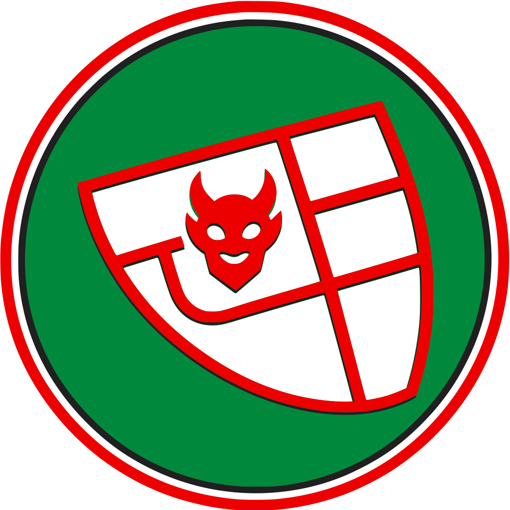

Rijksnormaalschool
- 1881school voor tekenleraren
- nuAcademie voor Beeldende Vorming

DuivelseilandHoe een stinkende uithoek aan de Boerenwetering een van de rustigste buurten van Zuid werd.
In 1906 rook het hier nog naar kaarsvet.
Duivelseiland is geen eiland. Er is geen water omheen, er is nooit een veerpont geweest. Toch noemden Amsterdammers dit stukje stad rond 1900 naar het beruchtste eiland ter wereld: de strafkolonie in Frans-Guyana waar de Franse officier Alfred Dreyfus onschuldig gevangenzat. Dit is het verhaal van hoe dat kwam — en hoe het weer goed kwam.
Lees het verhaal
Tot 1896 was hier geen Amsterdam, maar Nieuwer-Amstel.
De Boerenwetering was eeuwenlang gewoon een poldersloot. Aan de ene kant groeide Amsterdam, aan de andere kant lag Nieuwer-Amstel — de gemeente die we nu als Amstelveen kennen. Precies op die grens stond de Koninklijke Waskaarsenfabriek. Nieuwer-Amstel wist dat de grote stad het gebied wilde inlijven, en bouwde snel nog wat het zelf nodig vond.
De eerste Hobbemakade wordt gegraven — en meteen weer gedempt. De naam komt later terug, op een andere plek.
Vlak voor de annexatie opent Nieuwer-Amstel een HBS aan het latere Roelof Hartplein. Tegenwoordig is het The College Hotel.

Nieuwer-Amstel bouwt aan de Roelof Hartstraat nog een brandweer- en politiepost. Amsterdam vindt hem meteen te klein.
Het gebied tussen Singelgracht en Van Baerlestraat wordt bij Amsterdam gevoegd. De Schagerlaan heet voortaan Ruysdaelstraat.
Dezelfde uitsnede in vier jaren. Schematisch — rechts de Boerenwetering, linksonder het Roelof Hartplein.
Losse houten huisjes. Eén brug, bij de Ruysdaelstraat. De fabriek ernaast.
Meer huisjes op het zand. De fabriek wordt gekocht en gesloopt; de Hobbemakade kan worden aangelegd.
Gesloten bouwblokken, het Roelof Hartplein is af. Een tweede brug bij de Roelof Hartstraat.
Buurt KD09 in het Museumkwartier: ca. 60.000 m² tussen vijf straten.
Afgelegen, slecht bereikbaar en met de stank van de fabriek in de lucht: de bijnaam lag voor het oprapen.
Na de annexatie kwamen er in de hoek achter het Roelof Hartplein eenvoudige huizen, veel soberder dan in de rest van de nieuwe Museumbuurt. Er stonden houten huisjes en schuren op opgehoogd zand. Je kwam er alleen via die ene brug bij de Ruysdaelstraat. Tegelijk ging in Frankrijk een verhaal de wereld over: kapitein Alfred Dreyfus, onterecht veroordeeld voor spionage, zat vast op het Île du Diable — het Duivelseiland.
De Franse kapitein wordt verbannen naar een strafkolonie in Frans-Guyana. De wereld kijkt mee.
Geïsoleerd, slecht bereikbaar en stinkend: Amsterdammers noemen het hoekje achter het Roelof Hartplein "Duivelseiland".
Dreyfus mag terug naar Frankrijk, maar is nog niet vrijgesproken.
J.L. Scherpenisse fotografeert zand, houten huizen en rennende kinderen — de beste momentopname van het "eiland" die we hebben.
Het Duivelseiland van Dreyfus en het Duivelseiland van Amsterdam bestonden precies even lang — en verdwenen allebei in 1906.
Eén fabriek hield een hele stadsuitbreiding tien jaar lang tegen.
De Koninklijke Waskaarsenfabriek stond aan de Boerenwetering, op de oude gemeentegrens. Ze verspreidde een walgelijke stank, en haar afvalwater maakte de wetering er niet schoner op. Amsterdam wilde rond het nieuwe Rijksmuseum een chique buurt met villa's — maar wie wil er wonen naast zo'n fabriek?
Zolang de fabriek er stond, wilde niemand hier wonen. Dus kwamen er een circus, een fietsschool en een brandweerkazerne.
De stad verhuurde de grond aan de Hobbemakade voor korte tijd, of verkocht die aan wie geen keus had of de stank voor lief nam. Tussen Rijksmuseum en Ruysdaelstraat kwam maar één blok woonhuizen; de rest was utiliteitsbouw.
Van het Rijksmuseum tot aan Duivelseiland — schematisch.

Zodra de fabriek weg was, groeide het eiland vast aan de stad.
Na de sloop kon er langs de Boerenwetering een tweede toegang komen. Het duurde tot na de Eerste Wereldoorlog voordat de buurt af was, maar wie in 1930 over het Roelof Hartplein liep, stond in een modern stuk Amsterdam-Zuid — met een tramhalte voor de deur.
De stad koopt de waskaarsenfabriek en sloopt die. In hetzelfde jaar wordt Dreyfus in ere hersteld.
Langs de Boerenwetering wordt de Hobbemakade aangelegd. Het eiland is geen eiland meer.
Huize Lydia en de andere gebouwen rond het plein zijn klaar: het begin van Nieuw-Zuid.
De oude bebouwing van de Schagerlaan verdwijnt.
Koningin Wilhelmina en prinses Juliana bezoeken Huize Lydia. Dertig jaar eerder wilde "geen net mens" hier komen.

Alleen de naam herinnert nog aan het eiland.
Duivelseiland is nu een buurt in het Museumkwartier, ingeklemd tussen de Pijp en de Concertgebouwbuurt. Wie goed kijkt, ziet de geschiedenis nog terug.
De HBS van Nieuwer-Amstel uit 1894, aan het Roelof Hartplein.
Een zwembad in een fietsschool uit 1898.
Amsterdam wilde de brug elders, maar alleen de Ruysdaelstraat was breed genoeg.
De tweede toegang, die pas na de sloop van de fabriek kon komen.
Nog meer beelden van het Roelof Hartplein en omgeving.


Niet alles over Duivelseiland is zeker.
Heeft u oude foto's, verhalen of documenten over de buurt? We horen het graag.
Deel je verhaal